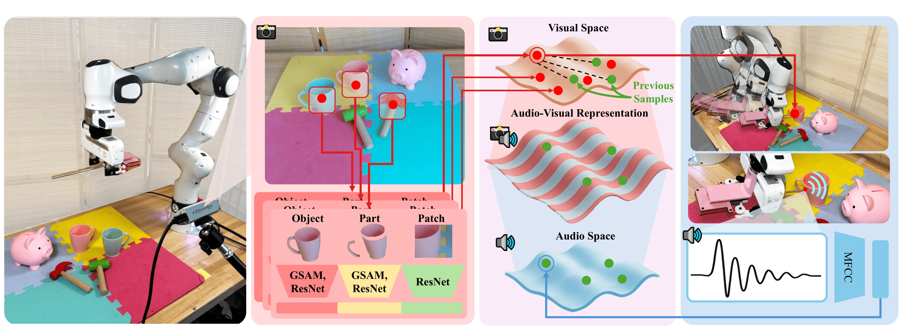
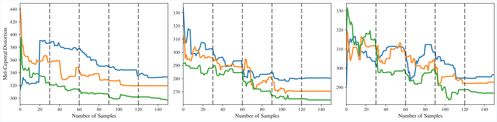
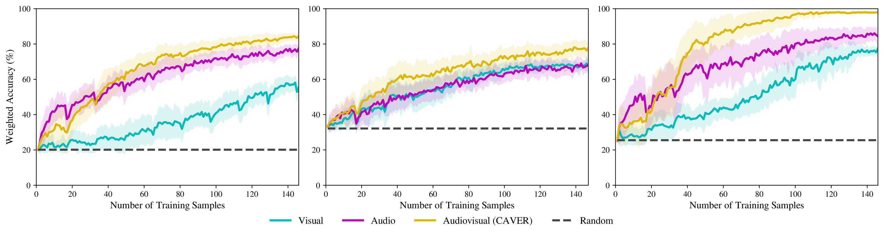

CAVER
Curious Audiovisual Exploring Robot
Abstract
Multimodal audiovisual perception can enable new avenues for robotic manipulation, from better material classification to the imitation of demonstrations for which only audio signals are available (e.g., playing a tune by ear). However, to unlock such multimodal potential, robots need to learn the correlations between an object’s visual appearance and the sound it generates when they interact with it. Such an active sensorimotor experience requires new interaction capabilities, representations, and exploration methods to guide the robot in efficiently building increasingly rich audiovisual knowledge. In this work, we present CAVER, a novel robot that builds and utilizes rich audiovisual representations of objects. CAVER includes three novel contributions: 1) a novel 3D printed endeffector, attachable to parallel grippers, that excites objects’ audio responses, 2) an audiovisual representation that combines local and global appearance information with sound features, and 3) an exploration algorithm that uses and builds the audiovisual representation in a curiosity-driven manner that prioritizes interacting with high uncertainty objects to obtain good coverage of surprising audio with fewer interactions. We demonstrate that CAVER builds rich representations in different scenarios more efficiently than several exploration baselines, and that the learned audiovisual representation leads to significant improvements in material classification and the imitation of audio-only human demonstrations.
Overview
Method Overview

CAVER curiously and efficiently learns correlations between object visual appearance and acoustic properties. Given candidate hitting points, CAVER uses a KNN model with fine tuned features from foundation vision models to predict corresponding impact sounds. To select informative interaction points, CAVER selects the most uncertain candidate hitting location using distance in visual feature space between a candidate (red) and all prior samples (green) as a proxy for uncertainty. After sampling the most uncertain candidate, the corresponding visual and audio embeddings are paired as two sides of the Audio-Visual representation. This can best be thought of as a bi-directional mapping where audio features can be used to predict visual features, visual features can be used to predict audio features, and concatenating the embeddings gives an informative multimodal representation of that sample point.
Experiments
We evaluate CAVER exploration-exploitation capabilities on several downstream tasks that require learning and ex- ploiting correlations between audio and visual appearance. We study four tasks in particular: predicting audio given visual input and hitting location, predicting material based on audio and vision, inferring musical notes played by a human, and identifying objects in a pick-and-place manipulation demonstrated by a human.
- Active Exploration: Comparing curiosity-based interaction against random and uncertainty-only baselines.
- Material Classification: Testing how audiovisual features improve the identification of diverse objects.
- Audio-to-Action Imitation: Demonstrating the robot's ability to recreate sounds from human demonstrations.
- Identifying Objects Pick-and-Place manipulation: Evaluating the robot's ability to synthesize the audio of unheard interactions using collected data.
Objects

Results

Audio prediction error naturally declines over time as the robot encounters more objects that are present in the withheld test set. We see that CAVER more quickly reduces the audio prediction error than the baselines, indicating that the curiosity-driven exploration indeed leads to more efficient learning of the audiovisual properties of the objects in each scene. This is especially apparent in later scenes when many of the objects have already appeared in earlier scenes and are thus already familiar to CAVER, whereas the baselines spend additional time sampling objects for which the uncertainty is already low.

We observe that the audiovisual model has the strongest performance across all three environments, demonstrating the utility of both com- bined audio and visual features when classifying materials. In addition, audio-only outperforms vision-only in environments where there are many objects of the same type, demonstrating the utility of the curiously collected data.
Conclusion
We introduced CAVER, a robot capable of efficiently and autonomously learning the audiovisual properties of ob- jects. By combining a nearest-neighbor retrieval system with uncertainty-driven exploration, CAVER can generate impact sounds conditioned on visual input and accelerate the ac- quisition of acoustic properties compared to naive sampling strategies. This enables robots to rapidly acquire auditory knowledge that supports downstream tasks such as sound prediction, material classification, and activity recognition, as demonstrated in our comprehensive evaluation.